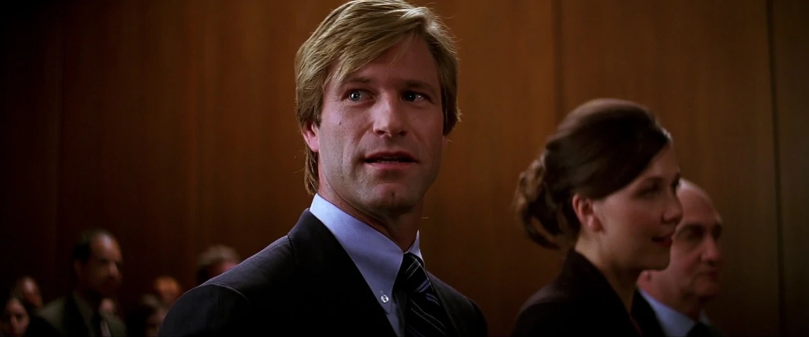

Gotham streets turned into vicious scenes of urban carnage yesterday as rival gangs fought for dominance in the post-Carmine Falcone era.
Maroni's men lashed out against both the Chechens and Gambol's organization. The Chechen outfit was hit deep in Chinatown at the New Paradise during lunch hour.

Assistant District Attorney Harvey Dent, taking advantage of political momentum after his initial prosecutions of corrupt GPD officers, announced his candidacy for Gotham DA at the infamous Krol Projects in crime-ridden East End.
After the latest Arkham Asylum mishap — when 9 inmates simply walked out of the compound in guard uniforms and killed 4 citizens in their first 24 hours free — it's time to rethink Gotham's strategy for housing the criminally insane.
And the first step in that rethink must be to close the notoriously incompetent, brutal, and corrupt Arkam Asylum. Indeed, with the kind of history Arkham has, one would have to be criminally insane to believe that this infamous Gotham institution will ever reform itself.